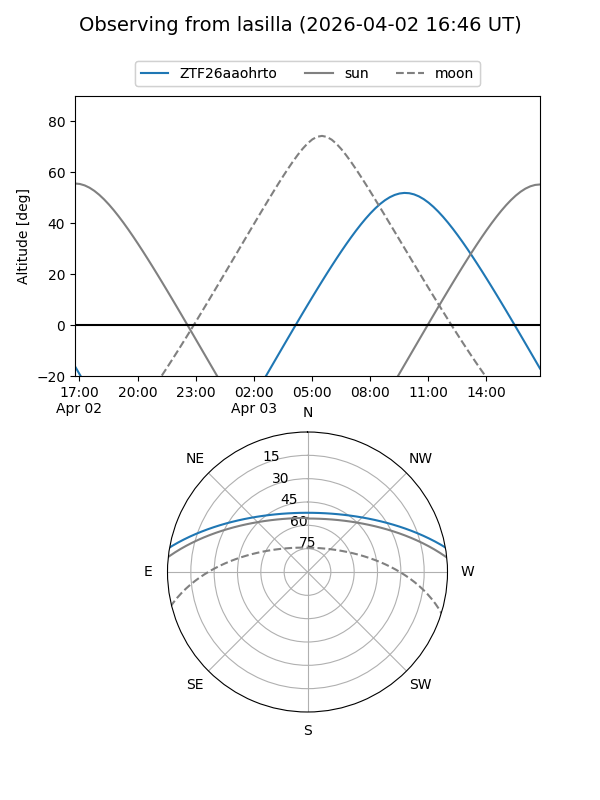
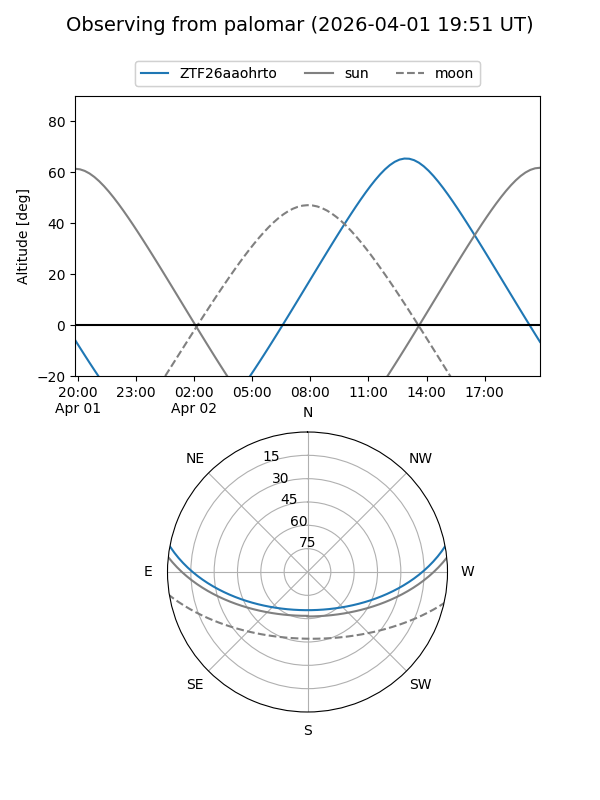

ZTF26aaohrto
Target ZTF26aaohrto at 2026-04-02 14:24
Aliases and brokers:
FINK: link
Lasair: link
ALeRCE: link
alt names
ZTF26aaohrto (ztf,fink_ztf)
Coordinates:
equatorial (ra, dec) = 267.8580,+8.82244
equatorial (HMS+DMS) = 17:51:25.92,+08:49:20.79
galactic (l, b) = (34.1244,+17.31218)
Flags:
Photometry:
last ztfg=14.41
1 ztfg detections
Lightcurve
Visibility


Additional plots